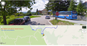
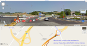

From the airport head South on the A14 for 55km (30 mins)
|
 | ||
|
|
Take the PESCARA lane | Keep right onto A14 South |
| ... |
Exit A14 at Civitanova Marche onto SS77 for 26km (15 mins)
|  | |||
| Leave A14 at Civitanova Marche | Approaching Tolls | Go Left at Roundabout (left lane) | Right filter for Foligno and Macerata |
| ... |
Exit SS77 at Sforzacosta join SP78 for 52km (50 mins)
 |
 |
 |
Exit SS77 at Sforzacosta | Keep right after SS77 exit | Right onto SP78 toward Sarnano | Straight through Sarnano on SP78 toward Amandola (becomes SP237) |
| ... |
Rustici leave SP237 left toward Monte San Martino on SP57 for 7km (10 mins)
 |
Rustici left onto SP57 toward Monte San Martino | Turn left off the SP84 for San Venanzo | 1km later having driven through San Venanzo go down hill and take the right fork | Sei Camini 43.034155,13.397433 |